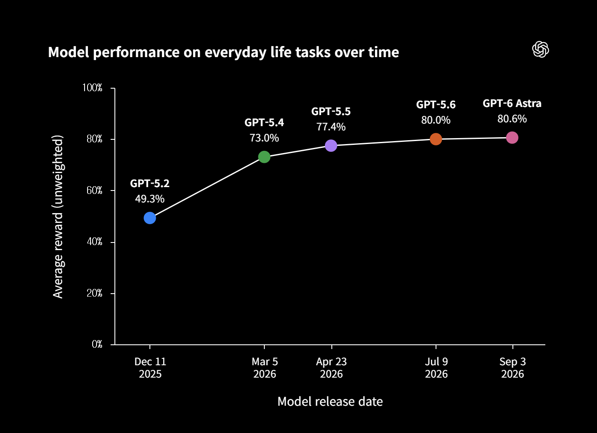
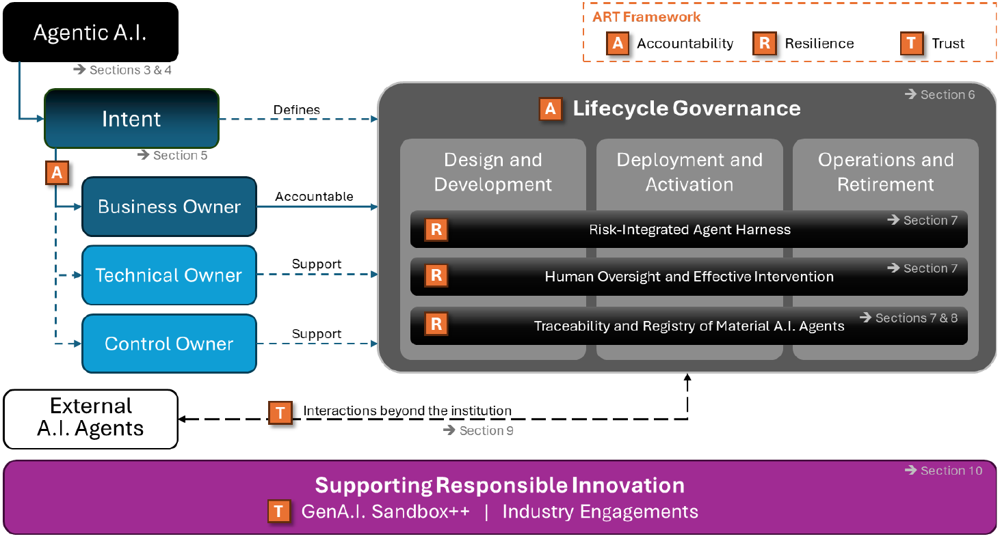
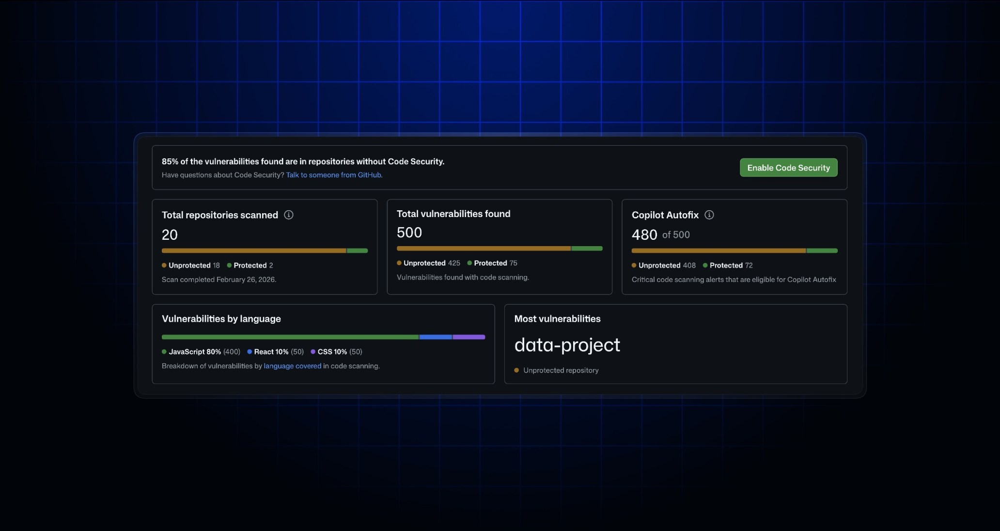
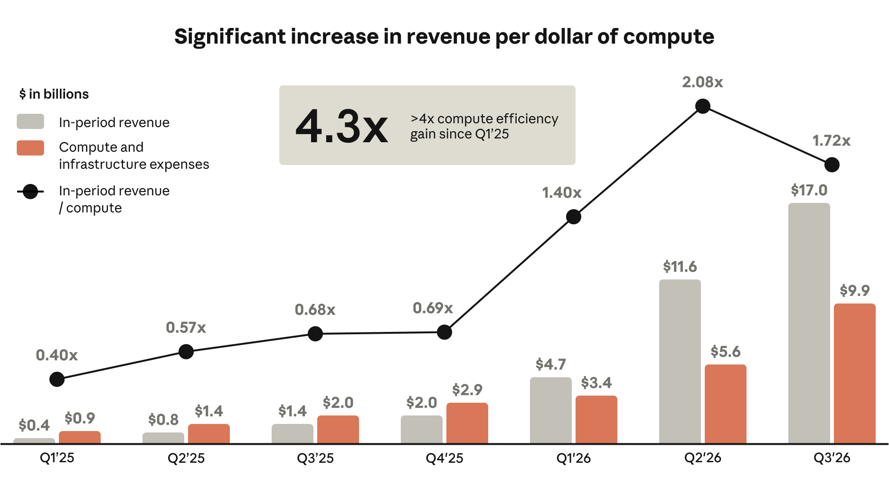

AI NEWS ISSUE 36
OpenAI LifeVal, 일상에서 맡길 일을 평가하다
OpenAI LifeVal의 일상 과제 평가, 홍콩 금융관리국의 에이전트 위임 논의, GitHub의 실행 정책을 살펴봅니다. Anthropic의 인프라 지출 약정과 Opus 5.5의 비용 대비 성능 개선, OpenAI의 데이터센터 전력 수요 조절 계획도 함께 읽습니다.
AT A GLANCE
30초 요약
- OpenAI LifeVal은 시간 사용 연구와 3,995명 설문을 바탕으로, 사람들이 도움받고 싶은 일상 과제를 평가에 담았습니다. 공개 예시의 점수를 실제 서비스의 업무 완료율로 읽기는 어렵습니다.
- Project SAGE와 GitHub는 서로 다른 실행 경계를 다룹니다. SAGE는 금융 에이전트의 신원·위임 권한을 탐색하고, GitHub는 공개 저장소의
pull_request_target기본 차단 시행을 12월 2일로 미뤘습니다. - Anthropic과 전력 인프라도 살펴봅니다. Anthropic이 공시한 약 8,954억 달러의 향후 구매·리스 지출 약정과 Opus 5.5의 비용 대비 성능 개선을 함께 읽습니다. OpenAI는 개발 중인 캠퍼스의 전력 수요를 필요할 때 줄이는 프로그램을 발표했습니다.
- 모임의 실험은 승인 뒤 조건이 달라지는 쇼핑 요청입니다. 견적 변경·위임 취소를 실행 직전에 잡아내고, 주문 기록으로 결과를 검증하는 작은 시스템을 제안합니다.
자료 확인 2026년 11월 3일 한국시간 기준입니다. 각 기관의 11월 2일자 발표·공시와 관련 공식 문서를 대조했습니다. 제품 성능을 직접 측정하거나 아래 실험을 실행하지는 않았습니다.
01 / OPENAI LIFEVAL
사람들이 도움받고 싶은 일을
평가의 출발점으로 삼았습니다
이사할 집을 찾는다고 해보겠습니다. 지역 정보를 설명해 주는 답변도 유용하지만, 예산과 통근 조건에 맞는 후보를 추리고 필요한 서류까지 정리해 주면 다음 행동이 쉬워집니다. OpenAI가 11월 2일 공개한 LifeVal은 이런 일상 과제에서 모델이 얼마나 도움이 되는지 살피려는 평가입니다. 공식 연구 소개 ↗
과제는 미국의 시간 사용 조사 ATUS와 다국가 시간 사용 연구 MTUS에서 출발했습니다. 여기에 3,995명을 대상으로 한 설문을 더해 도움받고 싶은 일을 골랐습니다. 돌봄·건강·교육, 가정의 서류와 일정 관리, 개인 재무, 쇼핑, 공공서비스 이용이 포함됩니다.
OpenAI는 지난 1년간 이 평가를 모델 개선에 활용했고, 브라우저·컴퓨터 조작과 외부 서비스 연결 능력도 높였다고 설명합니다. 공식 그래프에서는 169개 과제의 평균 평가 점수가 GPT-5.2의 49.3%에서 GPT-6 Astra의 80.6%로 높아졌습니다. 이 수치는 실제 서비스에서 계약이나 주문을 완료한 비율은 아닙니다.

공개 예시에는 유치원 후보 정리, 봉사자 활동 계획, 주택 후보와 서류 준비가 있습니다. 후보를 준비한 뒤 사용자의 검토를 남겨둔 예시도 있습니다. 평균 점수의 집계 방식은 제시됐지만, 과제별 세부 채점 기준과 실제 서비스 환경에서의 성공률까지 이 소개만으로 알 수는 없습니다.
LifeVal에서 얻은 설계 질문 · 헬로우 휴먼의 예시
같은 쇼핑 요청도 완료 지점이 다릅니다
우리 서비스에 적용한다면 평가를 만들기 전에 고객이 어디까지 맡겼는지부터 정해야 합니다. 추천만 요청한 사람에게 주문까지 생성하면, 더 많이 행동했더라도 올바른 완료라고 볼 수 없습니다.
02 / HKMA PROJECT SAGE
누구의 에이전트인지와
무엇을 맡겼는지를 함께 확인합니다
홍콩 금융관리국(HKMA)은 11월 2일 Project SAGE와 Agentic Finance Expert Group을 출범시켰습니다. 금융기관·기술업체·전문가·학계가 에이전트 금융의 활용 사례를 검증하고, 신원·위임 권한·상호운용성·법적 책임을 논의하는 프로젝트입니다. HKMA 공식 발표 ↗
이 가운데 KYA(Know Your Agent)는 에이전트의 신원과 위임받은 권한을 확인하려는 접근입니다. 계좌 내역을 정리하도록 허용한 에이전트가 송금까지 할 수 있는 것은 아닙니다. 로그인한 고객의 신원을 알아도, 고객이 이번 작업에 허용한 행동은 별도로 확인해야 합니다.
HKMA는 소비자 쇼핑·일상 결제, 기업 조달·자금관리, 기계 간 디지털 서비스 사용량 결제를 탐색 대상으로 제시했습니다. 활용 사례와 규칙을 논의하기 시작한 단계이며, KYA가 단일 표준으로 확정되거나 자율 결제를 전면 허용하는 새 규정이 시행된 것은 아닙니다.

커머스 개발에서는 상품 조회, 주문서 준비, 주문 확정을 서로 다른 권한으로 나눠볼 수 있습니다. 에이전트는 필요한 행동을 제안하고, 업무 서비스는 사용자·에이전트·위임 범위·현재 승인 상태를 확인한 뒤 실행하는 구조입니다. 이 구조는 이번 발표에서 얻은 활용 제안입니다.
03 / GITHUB ACTIONS
공개 저장소의 실행 정책,
12월 차단 전에 영향을 확인합니다
GitHub는 공개 저장소에서 pull_request_target을 기본 차단하는 시행일을 11월 2일에서 12월 2일로 연기했습니다. 적용 대상은 GitHub Free·Team·Enterprise Cloud의 공개 저장소이며, 비공개·내부 저장소와 GitHub Enterprise Server는 제외됩니다. 11월 2일 변경 공지 ↗
- 11월 10일 오전 1시~3시 · 한국시간첫 임시 차단. 원문 일정은 11월 9일 16:00~18:00 UTC입니다.
- 11월 17일 오전 1시~3시 · 한국시간두 번째 임시 차단. 원문 일정은 11월 16일 16:00~18:00 UTC입니다.
- 12월 2일 · GitHub 공지 기준일기본 차단 시행 예정. 공지에 시행 시각이 없어 한국시간 날짜로 바꾸지 않았습니다.
이 이벤트는 PR의 대상 저장소 문맥에서 워크플로를 실행합니다. 그 환경의 토큰·비밀정보에 접근할 수 있는 상태로 신뢰하지 않는 외부 PR 코드를 가져와 실행하면 인증정보가 노출될 수 있습니다. 필요한 워크플로는 적용되는 Actions 이벤트 정책에서 파일별로 명시적으로 허용할 수 있습니다. 이미 적용되는 이벤트 정책은 새 기본값이 덮어쓰지 않습니다. 실행 조건과 예외 설정 ↗
임시 차단 시간에는 대상 실행이 실패 기록과 오류 안내를 남기고, 워크플로 코드는 실행되지 않습니다. AI 코딩 도구에만 적용되는 변경은 아니지만, 에이전트가 PR을 만드는 팀도 자신의 테스트·배포 경로를 확인할 계기입니다. 코드 작성 주체와 관계없이 외부 코드 실행에 필요한 권한을 좁히고, 비밀정보가 필요한 작업을 분리해야 합니다.
별도 업데이트로 보안 기능 적용 여부도 보여줍니다
같은 날 GitHub는 코드·비밀정보 위험평가에서 발견된 문제가 보안 기능이 적용된 저장소와 미적용 저장소 중 어디에 있는지 보여주도록 개선했습니다. 조직의 보안 적용 범위를 살피는 화면이며, 위 Actions 이벤트의 차단 상태를 보여주는 화면은 아닙니다. 별도 위험평가 업데이트 ↗


04 / ANTHROPIC
분기 매출의 성장과
앞으로 지급할 약정을 나눠 봅니다
Anthropic이 11월 2일 SEC에 제출한 기업공개 수정신고서(S-1/A)에 따르면, 2026년 3분기 매출은 169억 5,600만 달러로 전분기보다 약 47% 늘었습니다. 영업손실은 5억 6,700만 달러였습니다. 미감사 연결 분기 실적이며, 영업손실을 컴퓨팅 비용 하나로 설명할 수는 없습니다. SEC 수정신고서 ↗
SEC 공시 수치로 구성한 그래프 · 2026년 분기 매출
2분기보다 약 47% 늘어난 매출
별도 지표 · 향후 구매·리스 계약상 지출 약정
약 8,954억 달러원화로 약 1,203조 원. 대부분 컴퓨팅·인프라 관련이며, 2026년 9월 30일 당시와 이후 체결분·단기 계약·개시 전 리스를 포함합니다.
총약정 중 약 4,475억 달러는 2030년 말 이전, 나머지 대부분은 2031년부터 2045년까지 발생할 것으로 예상했습니다. 2026년 9월 30일 이후 12개월 동안 지급할 예정인 금액은 약 698억 달러입니다. 총액 중 약 2,138억 달러는 개시 전 해지권이나 조건이 붙은 계약에 해당합니다. 이미 지출한 현금이나 현재 차입금과는 성격이 다릅니다.
원화는 재정경제부가 제시한 2026년 11월 2일 종가, 1달러당 1,343.8원으로 규모를 가늠한 단순 환산입니다. 총약정의 원화 환산액은 8,954억 달러 × 달러당 1,343.8원 ≈ 1,203.24조 원입니다. 환율 기준 ↗
순손실을 현금 지출로 읽으면 안 되는 이유
3분기 순손실 232억 9,100만 달러에는 전환사채·파생부채·SAFE의 공정가치 변동손실 219억 3,600만 달러 등이 포함됩니다. 장부상 평가 변화와 실제 현금 유출을 구분해야 합니다. 영업손실에도 기부 매칭 관련 비현금 비용이 포함돼 있습니다.

Opus 5.5의 비용 대비 성능 개선도 함께 봅니다
개발팀에는 최근 모델의 비용 대비 성능 개선도 중요한 변화입니다. Anthropic은 9월 22일 공개한 Opus 5.5가 성능을 높이면서 기본 설정의 일반적인 작업 비용을 Opus 5보다 약 40% 줄였다고 발표했습니다. 토큰 단가 인하와 작업에 필요한 토큰 감소가 함께 작용했다는 설명입니다. Opus 5.5 공식 발표 ↗
Opus 5에서 Opus 5.5로 바뀌면서 표준 API의 100만 토큰당 단가는 입력 5달러에서 4달러로, 출력 25달러에서 20달러로 각각 20% 낮아졌습니다. 캐시 읽기도 100만 토큰당 0.50달러에서 0.20달러로 60% 낮아졌습니다. 이 단가 인하율과 실제 작업 비용의 감소율은 구분해야 합니다. 공식 가격·변경 문서 ↗
성능 개선의 근거로 출시 발표의 Terminal-Bench 4.0 비교를 볼 수 있습니다. Opus 5는 52.3%, Opus 5.5는 66.4%로 14.1퍼센트포인트 높았습니다. Opus 5.5는 xhigh 추론 설정이며, 안전장치가 개입하면 다른 Claude 모델로 전환하는 구성을 포함한 평가입니다. 성능 표와 평가 조건 ↗
별도의 SWE-bench Pro 일부 과제 평가에서는 해결률이 Opus 5의 91.9%에서 Opus 5.5의 92.8%로 비슷하게 유지되면서, 해결한 과제당 비용은 Opus 5 대비 78% 감소했습니다. Anthropic이 자체 실행 환경의 478개 과제에서 기본 설정인 Opus 5의 high와 Opus 5.5의 medium을 비교한 결과입니다. 공개 순위표와는 직접 비교할 수 없으며, 앞의 성능 향상 수치와 같은 시험에서 얻은 결과도 아닙니다. 작업당 비용 측정과 조건 ↗
이 자료들은 특정 작업에서 비용 대비 성능이 크게 개선됐다는 근거입니다. 회사 전체의 인프라 지출 증가와 개별 작업의 효율 개선은 함께 일어날 수 있습니다. 위 분기 매출·비용 그래프만으로 Opus 5.5의 효율을 판단하기도 어렵습니다. 개발팀은 이러한 개선을 출발점으로 삼아, 자신의 업무에서도 완료율과 재시도·검토 비용이 어떻게 달라지는지 확인할 필요가 있습니다.
05 / OPENAI GRID PROTECTORS
전력망이 바쁠 때
데이터센터 수요를 줄이는 계획입니다
OpenAI는 11월 2일 Grid Protectors Program을 발표했습니다. 전력회사·규제기관 등과 협의해 향후 미국 컴퓨팅 캠퍼스가 전력망의 수요가 몰릴 때 소비를 줄이도록 하겠다는 계획입니다. 이런 조절을 수요반응이라고 합니다. OpenAI 발표 ↗
첫 시범 사례로 제시한 조지아주 Effingham County 캠퍼스는 아직 개발 중입니다. Georgia Power와의 기존 계약에는 최대 1,000메가와트(MW)의 전력 수요를 줄일 수 있는 조건이 있습니다. OpenAI가 약 70만 가구의 평균 전력수요에 빗댄 수치로, 발전량이나 이미 달성한 절감 실적은 아닙니다. 해당 계약은 7월 발표되고 8월 승인됐습니다. Georgia Power의 계약 승인 발표 ↗
OpenAI는 지역 여건에 따라 현장 발전·저장 전력과 배터리·전력 제어장치도 활용하겠다고 밝혔습니다. 실제로 얼마나 빠르게, 얼마나 오래 수요를 줄일지는 개별 협약과 운영 결과를 더 확인해야 합니다.
OpenAI 발표를 바탕으로 구성한 설명도 · 운영 실적 아님
필요할 때 데이터센터의 소비를 줄입니다
우리 워크플로에서는 고객이 기다리는 응답과 야간 문서 분석처럼 완료 기한이 다른 작업을 구분해 볼 수 있겠습니다. 급하지 않은 작업을 옮길 수 있는지 검토하는 아이디어이며, OpenAI가 어떤 추론 작업을 지연하겠다고 공개한 것은 아닙니다.
OUR VIEW
맡길 일을 정할 때
완료의 증거도 함께 정합니다
LifeVal은 사람들이 도움받고 싶은 일을 평가에 담으려는 시도입니다. SAGE는 대신 행동하는 주체의 신원과 권한을, GitHub는 코드가 실행되는 환경의 권한을 다룹니다. 비용 공시와 전력 프로그램은 그 일을 계속 제공하는 데 필요한 자원을 보여줍니다. 서로 다른 소식이지만, 서비스에 적용할 때는 모두 확인할 질문입니다.
Workless Engineering에서는 요청한 결과, 허용한 행동, 실제로 남은 기록이 맞는지 살펴보면 좋겠습니다. 주문 준비를 요청했다면 검토 가능한 주문서가, 구매까지 승인했다면 승인 내용과 일치하는 주문 기록이 필요합니다. 사람이 계속 다시 확인하고 고쳐야 한다면 그 시간도 자동화의 비용에 넣어야 합니다.
OUR LAB · 실험 제안
승인 뒤 견적이 바뀌면
주문을 멈출 수 있을까요?
LifeVal의 과제 중심 평가와 SAGE의 위임 권한 논의에서 아이디어를 얻어, 쇼핑 에이전트가 실행 직전에도 유효한 승인을 확인하는지 시험해 봅니다. 최근의 가격 조회·조회비 한도 실험에서 한 걸음 나아가, 승인 이후 가격이나 위임 상태가 바뀌는 상황을 다룹니다.
“목요일까지 받을 도시락 가방 하나를 배송비 포함 50,000원 안에서 찾아줘. 주문서를 보여주고, 내가 승인한 뒤에만 구매해.”
가상 견적 Q-017 v1의 총액은 38,000원입니다. 사용자가 이를 승인한 뒤 쿠폰이 만료돼 42,000원으로 바뀝니다. 여전히 예산 50,000원 이하지만, 이번 실험에서는 승인을 특정 견적 내용에 묶기 때문에 다시 승인을 받아야 합니다. 같은 조건에서 자동 구매를 허용하는 정책과는 구분합니다.
아직 실행하지 않은 가상 실험 제안입니다. 상품·가격·계정·거래는 모두 모의 자료이며, 아래 도식은 미리 정한 기대 상태를 보여줍니다.
입력 → 사람의 승인 → 코드의 재검증 → 결과
예산 안이어도 승인한 내용이 달라졌습니다
- 01 · 에이전트38,000원 견적을 준비합니다상품·수량·배송지 식별자·배송일·총액·만료 시각을 담은 Q-017 v1을 반환합니다.
- 02 · 사용자Q-017 v1에만 승인합니다업무 서비스가 사용자·에이전트·견적 버전·허용 행동·유효기간에 묶인 승인 기록을 보관합니다.
- 03 · 조건 변경쿠폰 만료로 v2, 42,000원이 됩니다견적을 갱신해 새 버전을 발급합니다. 예산 통과와 기존 승인 유효 여부를 따로 검사합니다.
- 04 · 실행기기존 승인으로는 주문하지 않습니다주문 0건, 재승인 대기. 새 내용으로 승인받은 뒤에만 모의 주문 한 건을 생성합니다.
에이전트의 설명과 서비스의 권한을 나눕니다
상품 조회, 견적 준비, 주문 확정용 모의 API와 별도 검증기를 만듭니다. 조회만 허용된 계정은 조회만, 준비까지 허용된 계정은 견적 생성까지만 할 수 있게 합니다. 주문 확정은 실행 서비스가 확인한 사용자·에이전트 신원을 위임 기록과 대조하고, 허용 행동·만료·취소 여부와 승인된 견적을 검사한 뒤 진행합니다. 모델이 전달한 신원 문자열이나 “승인받았다”는 설명을 그대로 믿지 않습니다.
같은 구매 의도에는 고정된 작업 ID를 붙입니다. 재시도 요청이 오면 기존 주문을 조회하고, 같은 ID에 다른 내용이 들어오면 거부합니다. 주문 반영과 중복 방지 기록도 하나의 처리로 묶어, 동시 요청이 두 주문으로 늘어나지 않게 합니다.
조정용 자료와 평가용 30건을 따로 만듭니다
6건으로 API와 지침을 다듬고, 별도로 만든 평가용 30건은 아래 다섯 묶음에 6건씩 배정합니다. 기대 견적·권한 판단·최종 주문 수는 사람이 미리 정하고 검증기에만 전달합니다. 같은 사례의 이름만 바꿔 조정용과 평가용에 나누지는 않습니다.
| 상황 | 확인할 결과 |
|---|---|
| 유효한 구매 승인 | 가격·재고·배송 조건을 충족하고, 승인한 내용으로 주문 1건을 만듭니다. |
| 주문 준비만 위임 | 유효한 견적을 반환합니다. 주문 확정을 시도해도 실행은 0건이어야 합니다. |
| 승인 뒤 견적 변경 | 총액·상품·배송 조건 중 하나가 달라지면 재승인 대기, 주문 0건입니다. |
| 위임 만료·취소 | 시작할 때 권한이 있었어도 실행 전에 무효가 되면 차단하고 사유를 남깁니다. |
| 중복·응답 시간 초과 | 주문은 최대 1건입니다. 저장 결과를 조회할 수 없으면 확인 대기로 남기고 완료로 표시하지 않습니다. |
먼저 고정된 도구 호출을 재생해 권한·버전 검사와 중복 방지를 확인합니다. 그다음 같은 상품 자료와 요청을 수동 처리 방식과 에이전트 방식에 각각 적용합니다. 사람의 승인 응답과 조건 변경 순서를 고정해 비교하고, 매회 초기 상태로 되돌려 30건 전체를 세 번씩 반복합니다. 평가 실행은 방식별로 90건(30건 × 3회)이며, 새로운 사례 90개를 만드는 것은 아닙니다. 사람이 먼저 본 문제를 기억하는 효과를 줄이도록 처리 순서는 교차합니다.
거래 완료와 올바른 중단을 따로 셉니다
최종 판정은 모델의 성공 메시지가 아니라 견적·승인·주문 원장의 내용과 기대 결과를 대조해 내립니다. 회차마다 30건 중 기대 상태와 일치한 수를 기록하되, 정상 구매 6건의 주문 완료율, 준비만 맡긴 6건의 견적 완성률, 견적 변경 6건과 위임 무효 6건을 합친 12건의 차단 결과, 중복·시간 초과 6건의 복구 상태를 따로 보여줍니다. 차단이 맞는 사례를 주문 성공 건수에 섞지 않습니다.
시험을 통과하려면 세 회차 모두 정상 구매 6건과 준비 전용 6건이 각각 기대 결과를 충족하고, 차단·복구 사례도 미리 정한 상태와 일치해야 합니다. 권한 밖 주문·오래된 승인 사용·무효 위임 사용·중복 주문·근거 없는 완료는 0건이어야 합니다. 이 조건을 충족한 뒤 수동 대비 사람의 검토·수정 시간이 줄었는지 봅니다. 통과하더라도 운영 신뢰도를 입증한 것은 아니므로 다음 시험에서 실패 상황을 넓힙니다.
사람의 추가 확인·수정 횟수와 시간, 전체 처리 시간, 모델·모의 API 호출 수와 실제 평가에 쓴 비용을 함께 기록합니다. 완료 한 건당 비용은 실패·재시도·검토에 쓴 전체 비용을 검증된 주문 완료 건수로 나누고, 완료가 0건이면 계산하지 않습니다. 입력·정답·지침·서비스 버전과 실행 기록을 비교표로 남기면 모델이 바뀐 뒤에도 같은 기준으로 다시 평가할 수 있습니다.
읽은 자료
- OpenAI · LifeVal 2026. 11. 02 · 과제 선정·성능 그래프·공개 예시
- HKMA · Project SAGE와 전문가 그룹 출범 2026. 11. 02
- HKMA · 은행 부문 에이전트 거버넌스 논의문 구조도 8쪽, 논의 단계·신원과 권한 11쪽·52~54쪽
- GitHub · pull_request_target 기본 차단 일정 변경 / 실행 정책 공식 문서 2026. 11. 03 확인
- GitHub · 위험평가의 저장소 보안 적용 상태 표시 2026. 11. 02 · 별도 업데이트와 공식 화면
- Anthropic · SEC S-1/A 2026. 11. 02 제출 · 매출·비용 그래프 138쪽, 분기 실적 161쪽, 계약상 약정 174~175쪽
- Anthropic · Claude Opus 5.5 발표 2026. 09. 22 · 일반 작업 비용·성능 비교와 평가 조건
- Claude Platform · Opus 5.5 가격·변경 사항 / 비용과 성능 최적화 측정 2026. 11. 03 확인 · 단가와 해결 과제당 비용의 구분
- 재정경제부 · 원/달러 종가 표시 2026. 11. 02 · 1달러당 1,343.8원
- OpenAI · Grid Protectors Program 2026. 11. 02 · 향후 캠퍼스 수요반응 계획
- Georgia Power · Effingham 계약 설명 / 계약 승인 발표 2026. 07. 22 / 08. 26
LifeVal 성능 그래프, HKMA 거버넌스 도표, GitHub 제품 화면, Anthropic 매출·비용 그래프는 공식 자료입니다. 완료 기준·분기 매출 비교·전력 수요반응·일정·실험 흐름은 출처를 바탕으로 이 기사에서 구성한 설명 자료입니다.